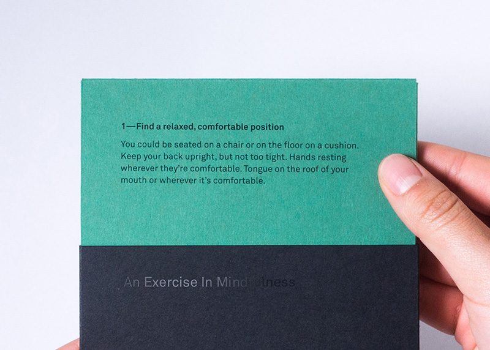
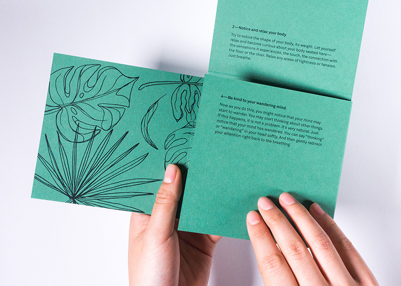
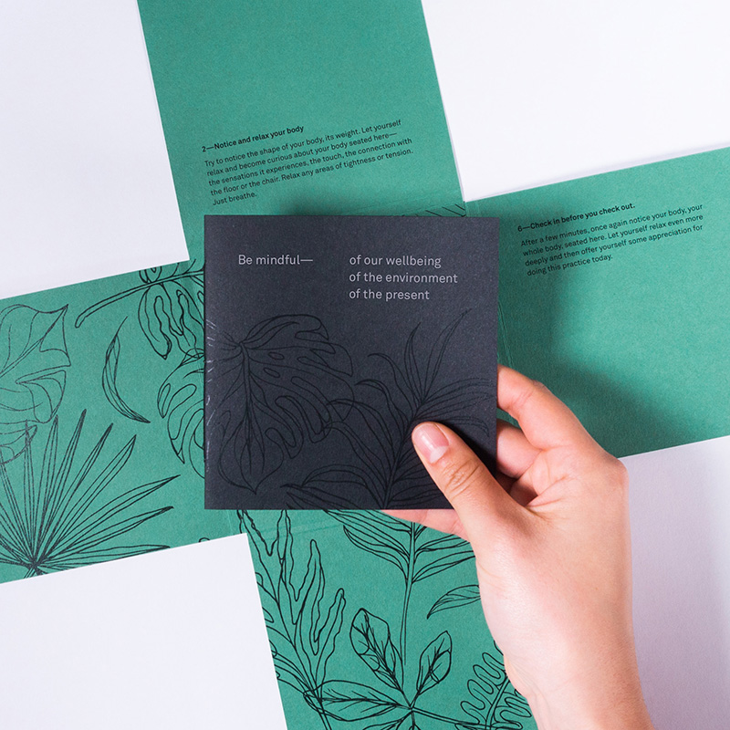
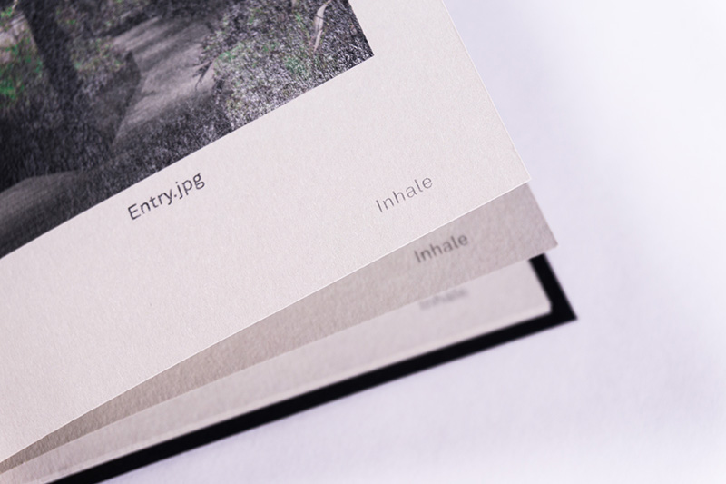
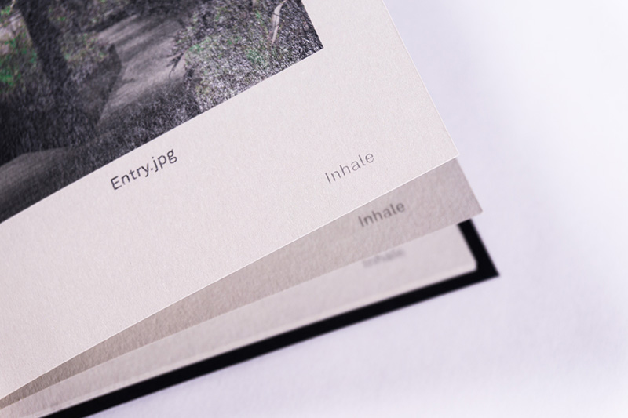
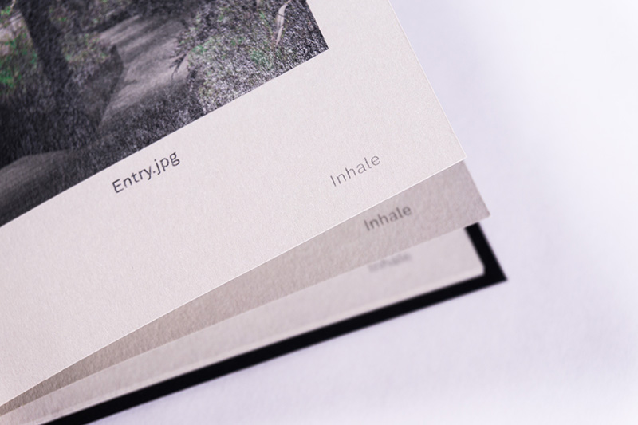

The publication is, in part, a step by step mindful breathing practice. The steps are revealed one by one as you delve into it; the idea is to not rush through everything, including life.



 

A publication that responds to Breathe Architecture's design of Slack's Melbourne office. The serene yet focussed atmosphere of the office prompted an exploration of mindfulness.
